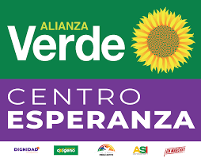
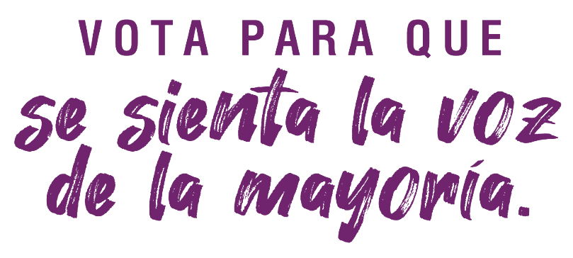

|  |
Ya se observa que son muchos los aspirantes a la presidencia de la República,
y la campaña política está entrando en calor. Cada uno de los aspirantes a la
presidencia para el año 2022 busca ubicarse en los espectros políticos que se
identifican en cualquier país donde la agitación electoral se registra. Son tres
espectros: derecha, centro e izquierda. Los otros espacios son cercanos o afines
a uno de los tres, por esa razón en virtud del enfilamiento o identificación con la
ideología que contienen sus programas y portan, son subsumidos o absorbidos
por uno de los tres espectros. Si un partido o movimiento político insiste en no
hacer coalición o en no identificarse con uno de esos tres campos de la acción
política, no pasara de la inscripción y la participación en la primera vuelta y queda
solo en el registro con la foto en el tarjetón.
Los calculistas lo hacen para ligarse con uno de los dos triunfadores
encaminados hacia la segunda vuelta electoral. Pero los reciben como añadidos
para una participación burocrática, si les respetan el pacto al que lleguen. Pero
quien tenga vocación para ganar y ejercer el poder, construye la coalición desde
antes de empezar la primera vuelta y realiza mecanismos de selección previos
para seleccionar el candidato que obtenga la fortaleza con el posicionamiento de
su nombre frente a consultas, convenciones, encuestas, u otra forma de
selección. |
 |
| < Elecciones presidenciales > | ||